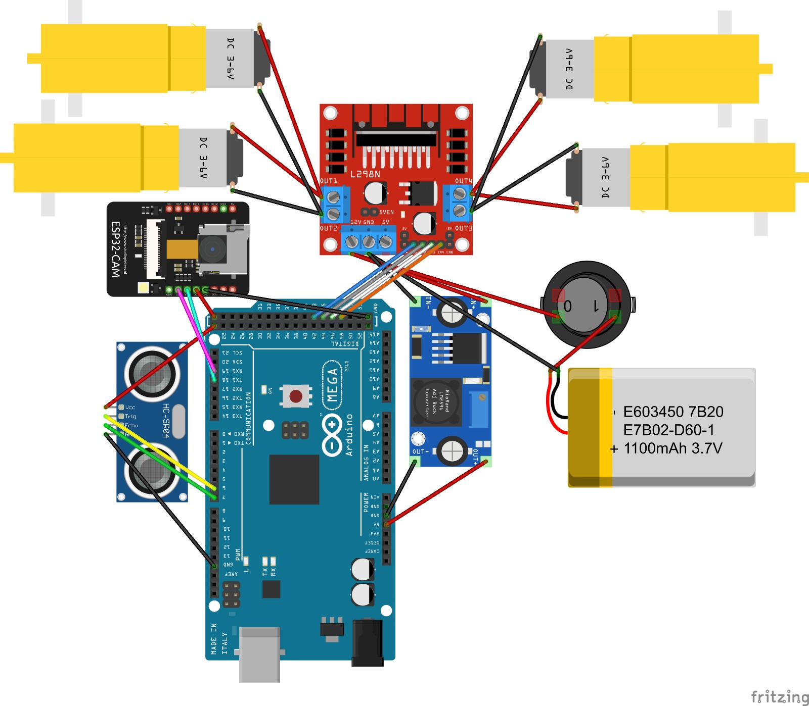
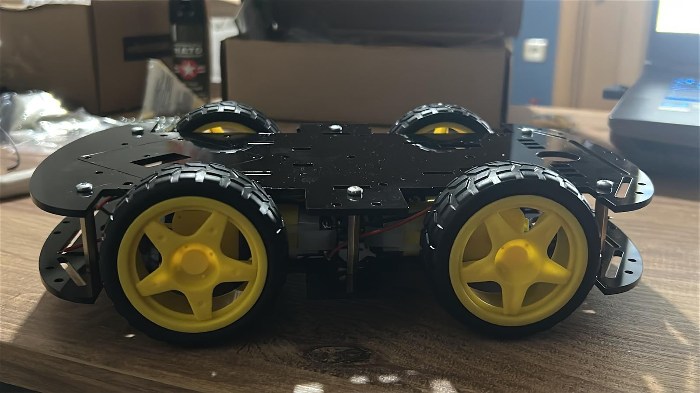
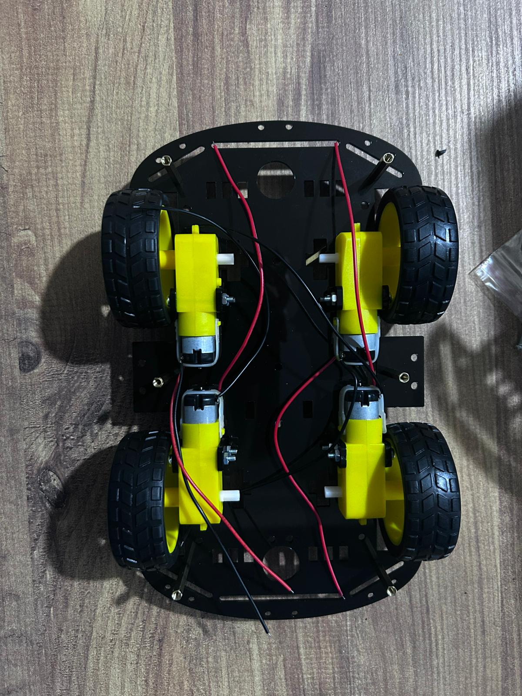

Piri Reis Üniversitesi Bilgisayar Programcılığı bitirme projemiz: İnsan hayatını riske atmadan, tehlikeli alanlara girip yangınlara kendi kendine müdahale edebilen bir robot tasarladık.
Endüstriyel tesisler, enkazlar veya madenler... Buralardaki yangınlara ilk müdahaleyi yapmak her zaman çok tehlikeli olmuştur. Klasik uzaktan kumandalı araçları incelediğimizde bazı temel sorunlar fark ettik:
Kumandalı araçlar sürekli operatör dikkatine ihtiyaç duyuyor. Araya bir duvar girip sinyal koptuğunda araç maalesef tamamen işlevsiz kalıyor.
Operatörün anlık bir dikkatsizliği veya kameradan kaynaklı gecikmeler, saniyelerin bile önemli olduğu yangın anlarında büyük sorunlara yol açabiliyor.
Geliştirdiğimiz bu robot sadece dümdüz hareket etmekle kalmıyor; çevresini analiz ediyor ve yangını bulduğunda bağımsız olarak karar verip müdahale edebiliyor.
Webcam (veya tasarlanan ESP32-CAM modülü) ile ortamı sürekli izliyor. Yazdığımız görüntü işleme kodları sayesinde alevin rengini (kırmızı ve turuncu tonlarını) saniyeler içinde ayırt edebiliyor.
ESP32-CAM modülü donanım eksikliği nedeniyle bu sürümde pasiftir; yerine webcam kullanılır.
Ortamda birden fazla ateş varsa hangisinin daha acil olduğunu "Bulanık Mantık" (Fuzzy Logic) kullanarak hesaplıyor. Ardından en kısa yoldan oraya gitmek için rotasını çiziyor.
Robot hedefe yeterince yaklaştığında veya ortam sıcaklığı tehlikeli seviyelere (60°C üstü) çıktığında güvenli bir şekilde duruyor ve otomatik müdahaleyi başlatıyor.
Kamera modülü ortamın anlık görüntüsünü kablosuz ağ üzerinden ana sisteme aktarıyor. Yani robot aslında etrafını sürekli izliyor.
Stream: http://192.168.x.x/streamDurum: Bağlantı Başarılı
Gelen görüntüleri Python kodlarımızla işliyoruz. Ortamdaki diğer ışıkları eleyip sadece gerçek alevin rengini odaklıyoruz.
# Rengi ayırt etmask = cv2.inRange(hsv, alt_deger, ust_deger)
Bulunan yangınların boyutuna bakıp hangisinin daha tehlikeli olduğuna karar veriyoruz. Sistem bir nevi "Önce büyük olana gitmeliyim" diyor.
Eğer Yangın Alanı Büyükse -> Öncelik YüksekDurum: Hedefe İlerliyor
Tüm bu kararlar saniyeler içinde verilip motorlara iletiliyor. Doğru açıyla hedefe gidip zamanında müdahale mekanizmasını çalıştırıyor.
# Arduino'ya komut yollaMotorlar: İleri (Hız: 160)Hedefe Ulaşıldı -> Dur ve Kolu İndir
Robotumuzun yapım ve test aşamalarından bazı anlar.

Geliştirme Aşaması

Donanım Birleşimi

Sistem Testi
Proje Eş Geliştiricisi
Robotun hem yazılımsal algoritma geliştirmesinde (OpenCV, ESP32) hem de genel sistem entegrasyonu aşamalarında tüm süreci birlikte yürüttük.
Proje Eş Geliştiricisi
Donanımsal parçaların montajı, Arduino bağlantıları ve projenin yazılımsal altyapısının test edilmesi gibi süreçleri uçtan uca ortaklaşa kurguladık.
Proje Danışmanlarımız
Piri Reis Üniversitesi • Bilgisayar Programcılığı Bölümü
Bu projeyi üniversitede bir bitirme ödevi olarak başlattık ama aslında çok daha büyük bir hayalimiz var: İnsanları tehlikeye atmadan, yangınlara otonom şekilde müdahale edilebilecek bir gelecek.
Endüstriyel Ölçek
5G ile Uzaktan Kontrol
Sürü (Swarm) Robotlar
Uzun Batarya Ömrü